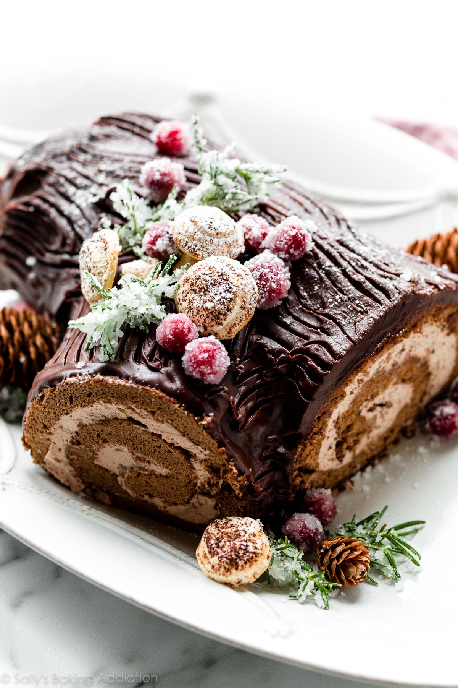

Yule Log Cake

One of my favorite desserts which I found while playing Animal Crossing
Traditional Christmas cake from France, Belgium, Switzerland and former French colonies.
Ingredients for cake
- 1 and 1/3 cups (157g) cake flour
- 2 Tablespoons (10g) unsweetened natural or dutch-process cocoa powder
- 1 teaspoon baking powder
- 1/2 teaspoon salt
- 6 large eggs, separated and at room temperature
- 1 cup (200g) granulated sugar, divided
- 2 Tablespoons (30ml) vegetable oil, canola oil, or melted coconut oil
- 1 and 1/2 teaspoons pure vanilla extract
Ingredients for rolling
- 3 Tablespoons (15g) unsweetened natural or dutch-process cocoa powder
Ingredients for whipped cream
- 1 and 1/2 cups (360ml) cold heavy cream
- 2 Tablespoons (30ml) Frangelico liqueur
- 1/4 cup (30g) confectioners’ sugar
- 1 Tablespoon (5g) unsweetened natural or dutch-process cocoa powder
- 1/2 cup (60g) finely chopped hazelnuts (optional)
-
Ingredients for ganache topping
- 6 ounces (170g) semi-sweet chocolate, finely chopped
- 3/4 cup (180ml) heavy cream
Steps
- Preheat oven to 350°F (177°C). Spray a 12×17 inch baking pan with nonstick spray or grease with butter, so the parchment paper sticks. Then line it with parchment paper so the cake seamlessly releases. Spray or grease the parchment paper too. We want an extremely nonstick surface for this cake roll.
- Whisk the cake flour, cocoa powder, baking powder, and salt together in a medium bowl. Set aside until the next step. Using a hand mixer or a stand mixer fitted with whisk attachment, beat the egg whites and 1/2 cup (100g) sugar together on high speed for 4-5 minutes or until stiff peaks form. Transfer to another bowl. Using the same mixing bowl you just had the egg whites in (no need to clean it), add the egg yolks, remaining sugar, oil, and vanilla extract. Beat together on high speed for 3-4 minutes or until thickened and light in color.
- Add half of the whipped egg whites into the egg yolk mixture. Beat on low speed for 10 seconds. Repeat with remaining egg whites and beat on low for 10 seconds. Add half of the flour mixture and beat on low or fold with a rubber spatula until combined. Repeat with remaining flour mixture. Avoid over-mixing and deflating those egg whites. Batter will be very light.
- Spread batter evenly into prepared pan. Gently bang the pan on the counter a couple times to pop any air bubbles. Bake for 18-19 minutes or until the cake springs back when lightly poked with your finger. Cake will look a little bubbly on top when it’s done. That’s ok. Avoid over-baking cake because it will crack if over-baked. As the cake bakes, get started on the next step.
- As the cake bakes, place a piece of parchment paper (larger than the cake) or a thin kitchen/tea towel flat on the counter. (Note: I find a kitchen towel is better to help prevent cracking.) Using a fine mesh sieve, dust parchment/towel with 3 Tablespoons (15g) of cocoa powder. Once the cake comes out of the oven, quickly run a knife around the edges to loosen it. Immediately invert it onto the parchment/towel. Peel off the parchment paper that was on the bottom of the cake as it baked. Starting with the narrow end, begin tightly rolling the hot cake up with the parchment/towel. Do this slowly and gently. The cake will be warm. Allow the cake to cool completely rolled up in the parchment/towel. Feel free to place it in the refrigerator to speed it up, about 3 hours and up to 1 day.
- Preheat oven to 200°F (93°C). Line a large baking sheet with parchment paper or a silicone baking mat. In a completely clean residue-free large glass or metal mixing bowl, using a handheld mixer or stand mixer fitted with a whisk attachment, beat the egg white, cream of tartar, and salt together on high speed until foamy, about 2 minutes– this is a small amount and the whisk on a stand mixer might not reach it, so whisk by hand until foamy if needed. With the mixer running on high speed, slowly add the sugar and beat until stiff glossy peaks form, about 2 more minutes. Snip off the end of a plastic bag or fit a round piping tip in a piping bag. I use and recommend Wilton 2A piping tip or any tip with around a 1/2 inch opening. Pipe quarter-sized circles (these will be the round mushroom tops) and 1-inch tall cones (these will be the stems). You will have enough meringue batter for about 16 mushrooms. I usually only make 8-12 and discard leftovers, but feel free to make all 16. Using a moistened finger (just a dab of water is fine), smooth down any peaks. If desired, lightly dust mushroom tops with cocoa powder using a fine mesh sieve. Bake for 2 hours. Do not open the oven as the meringues bake. Turn off the oven after 2 hours and let the meringues sit inside the cooling oven for 20 minutes. Remove meringues from the oven and cool completely. When they’re just about cool, melt the 1 ounce of chocolate in a double boiler or use the microwave. If using the microwave, melt in 15 second increments, stopping and stirring between each until melted and smooth. Cool for 5-10 minutes. (Easier to adhere mushrooms if the melted chocolate is a bit cool.) Once meringues have cooled, use a flat spatula to remove them from the baking sheets. Dot a bit of chocolate onto the center of the bottom of a mushroom top. Adhere a mushroom stem to it. Place back on the baking sheet to set. If stems or tops still have a little peak, scrape off with a knife or your spatula, as you see me do in the video above. Leaning them against the rim is helpful if they keep toppling over. Repeat with remaining tops and stems to form mushrooms. Let chocolate cool and harden, about 1 hour.
- Remove the cake roll from the refrigerator and allow to sit on the counter for a few minutes to warm up as you prepare the whipped cream.
- Using a hand mixer or a stand mixer fitted with a whisk attachment, whip the heavy cream, Frangelico, confectioners’ sugar, and cocoa powder on medium-high speed until medium to stiff peaks form, about 2-3 minutes.
- Gently and very slowly unroll the cake. Spread whipped cream evenly on top, leaving about a 1/2 inch border around the cake. I like using a large or small offset spatula to spread. Sprinkle chopped hazelnuts on top. Gently roll the cake back up, without the parchment/towel this time. Roll it slowly. This part is messy. Carefully place on a cutting board. If the exterior of the cake looks moist, dust with a little cocoa powder. Cover with plastic wrap and refrigerate for at least 30 minutes and up to 2 days before shaping and topping with ganache.
- Place chopped chocolate in a medium bowl. Heat the cream in a small saucepan until it begins to simmer. (Do not let it come to a rapid boil– that’s too hot.) Pour over chocolate, then let it sit for 2-3 minutes to gently soften the chocolate. Slowly stir until completely combined and chocolate has melted. Ganache will be thin, so it has to thicken before using. Refrigerate, uncovered, for at least 30 minutes and up to 1 hour to thicken.
- Remove rolled cake from the refrigerator. Diagonally slice a 3-4 inch section off one end. At this point, I usually place the cake on a serving platter. Place the angled side against a side of the roll, forming a branch. Slowly pour and spread thickened ganache all over the top and sides of cake. Feel free to leave the cut ends exposed (as you see in these photos) or spread ganache over the ends– there should be plenty of ganache to use. Use a fork to make textured lines resembling tree bark. Feel free to wipe the serving plate if ganache dripped all over.